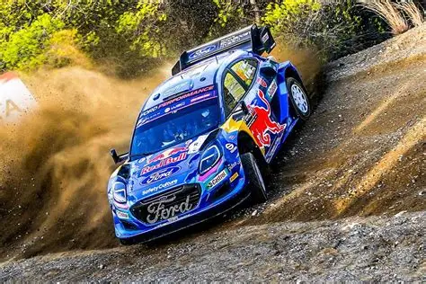
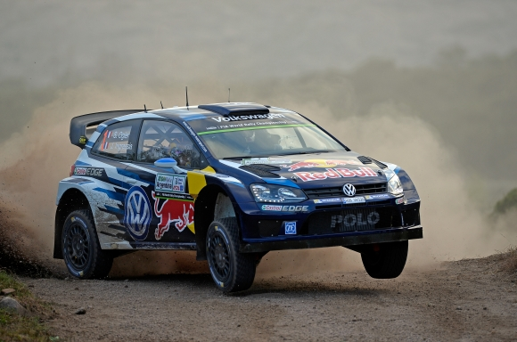
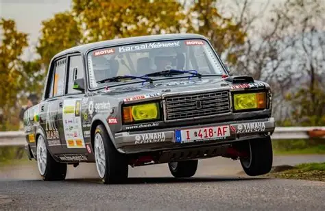

A második gyakorlati óra feladata

A rally a motorsport egyik ága, ami nem a megszokott helyszínen van lebonyolítva, hanem szűk, erdei közutakon amelyek a verseny időtartamára el vannak zárva a publikum elől. Azaz egy adott szakaszon kell eljutni a leghamarabb a rajtból a célba.
Mint minden más sportban, itt is csapatokból áll a mezőny. Minden résztvevőnek megvan a szerepe, ami kulcsfontosságú a versenyben való sikeres részvételhez. Az autóban ketten tartózkodnak:

Híres arról a motorsport ezen típusa, hogy szószerint, olyan autóval mész amilyennel akarsz. Támad egy ötleted, becsövezel egy Seicentot és már rajthoz is állhatsz, ha a biztonsági követelményeknek eleget tesz az autód. De a komolyabb kategóriákban, például világbajnokságon vagy európa-bajnokságon, de akár országoson is már gyári versenyautókat használnak. Több gyártó is jelen van a rallyban, a következő táblázat ezt mutatja be a legfontosabb típusokból felhozva 1-1 példával.
| Típus | Gyártó | Modell | Hajtás |
|---|---|---|---|
| WRC | Toyota | Yaris | Összkerék |
| R5 | Skoda | Fabia | Összkerék |
| Rally3 | Ford | Fiesta | Összkerék |
| Rally4 | Peugeot | 208 | Elsőkerék |
